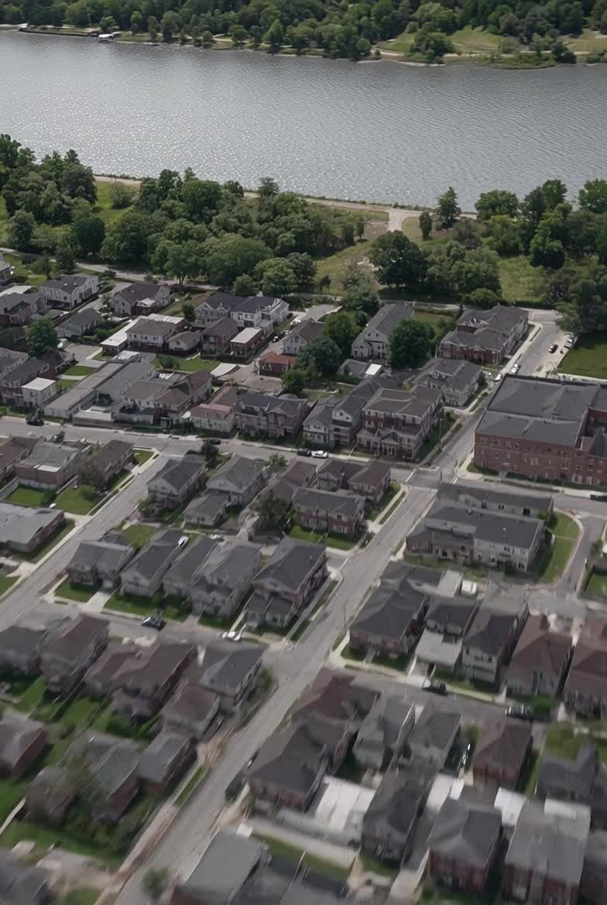

Yanticaw Park
Wooded paths, fields, and Yanticaw Brook — the township’s green spine.
Green space
Rivers and brooks cut the township. Parks follow them. From Yanticaw in the north to the Passaic on the east, Nutley kept its shade.
The system
Essex County’s Yanticaw Park sits inside the township. Memorial Park occupies the old mill grounds on the Third River. Kingsland hides a pond and a waterfall behind ordinary streets. Booth Park is where the youth leagues play. Together they run to more than a hundred acres — unusual density for a place this small, which is why the film behind the title is a dam and a park, not a skyline.

Directory
Wooded paths, fields, and Yanticaw Brook — the township’s green spine.
A pond, a dam, a waterfall, and Kingsland Manor across the water.
Three adjoining parks on the old mill grounds of the Third River.
Baseball, football, basketball, lacrosse, soccer, and roller hockey.
Neighborhood fields and playgrounds tucked into the street grid.
A quieter green named for a longtime parish priest.
A pocket of lawn and play space on the east side.
One of the smaller parks — no house is more than a half-mile from green space.
Neighborhood recreation in a system of more than a hundred acres.
A local field and playground named for Monsignor Owens.